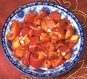

|
Salted Red ChiliChina - Hunan | ||||
| Makes: Effort: Sched: DoAhead: |
8 oz * 2 week Must |
Essential to Hunan cooking, this distinctive seasoning and condiment is easy to make. I also mash it up to use for Sichuan pickled chili paste and other applications calling for Sichuan pickled chili. | |||
|
1 1/4 |
# c |
Chili, Red Fresno (1) Sea Salt (2) |
|